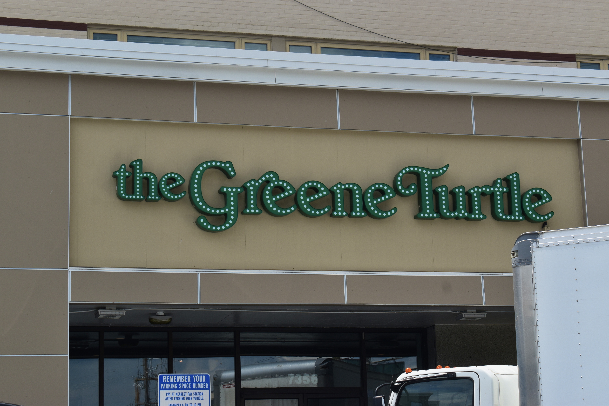
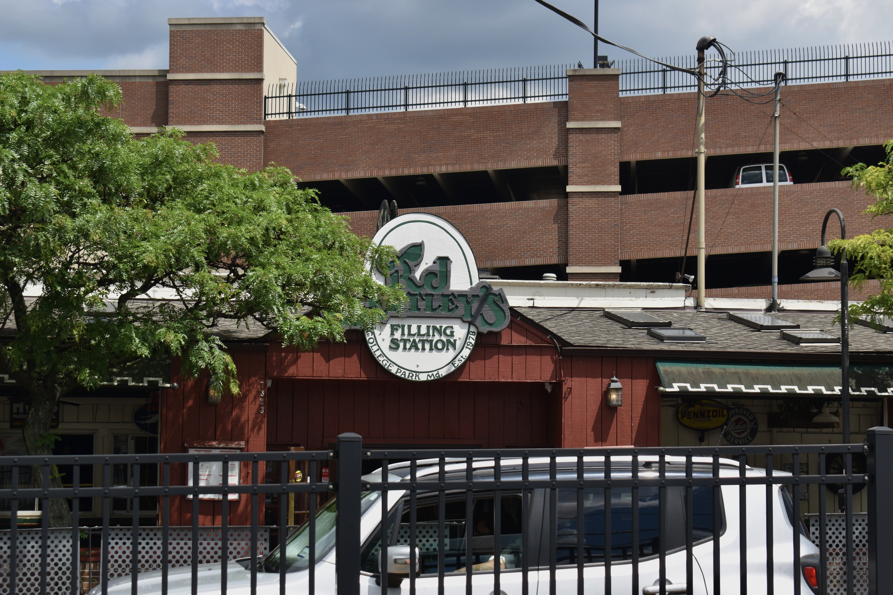
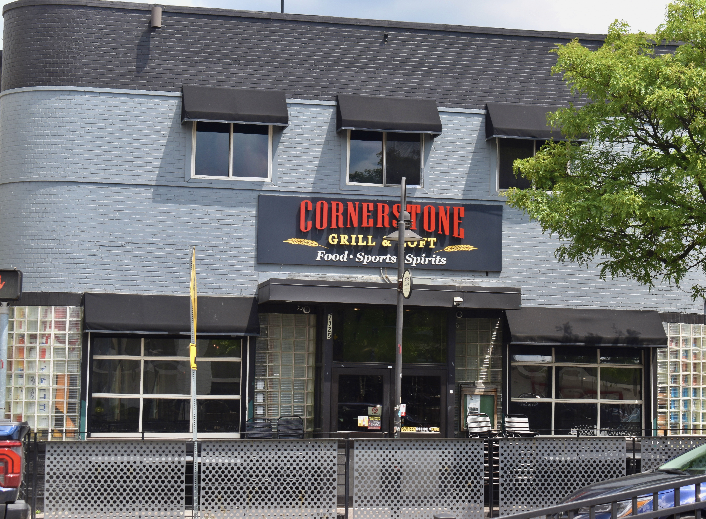

The structural pressures of drinking at the University of Maryland
67 undergraduate students were surveyed, across age ranges, years and majors, regarding the societal pressures of alcohol consumption on and around campus. Anoniminity was promised for all final conclusions to increase particpant honesty.
May 6, 2025
By Sanya Wason

Terrapin's Turf/Sanya Wason
As children, we are always taught not to succumb to peer pressure— but what if that pressure is ingrained into the very systems we live in?
At a large state university, like the University of Maryland, with over 31,000 undergraduate students and a prominent Greek Life population, drinking is heavily normalized.
In fact, it’s plastered all over the walls: 1 in 4 Terps choose not to drink….meaning 3 out of 4 do.
Bars and normalization
With five main bars for students to frequent and many-a-happy-hour, there are lines out the door for any liquor-serving place past 9p.m. on the weekends.
From Cornerstone Grill and Loft to Looney’s Irish Pub, there’s a place to drink for all kinds of people!
When most people hear ‘the seven days of the week,’ they typically think ‘Monday, Tuesday, etc.’ But, for UMD students, the days are different, and go as follows:
With bars, frat houses and apartment parties, there are many ways for students to take advantage of these adequately-named days of the week.
“I think under-aged drinking is really normalized; it’s part of the college experience,” a senior said, reflecting on her experiences as an undergraduate student at the university.
Many of the survey respondents said they felt left out if they did not go to social events where drinking occured, which contributed to the cycle of normalization.
Fake IDs
If you walk by the bar lines snaking around the corner, you’ll likely see people staring down at their IDs in a desperate attempt to remember what fake address and birthday they put down, just in case the bouncer asks.
If you go to a bar late enough, where the people in line are already too intoxicated, you’ll notice the walk of shame that follows getting asked your birthday and saying the wrong year.
61% of respondents said they own a fake ID and 6% said that despite not owning one, they’ve used one before.
One person shared a story in which their short, Chinese, friend used a tall, White girl’s fake ID at Looney’s Pub and got in with no questions asked.
Bars located in college towns, such as this one, are bound to accept fake IDs and serve underage populations, as they make more money that way.
Another respondent shared that they hardly get carded at the bars here, and when they do, no questions are asked about their ID.
Many students, however, are not conceious of the repercussions of possessing a fake ID. While it is likely the offender will just have a misdemeanor, the consequences can be very serious, and even lead to jail time, according to Maryland attorneys.
“I think that people do not care about the repercussions of owning a fake ID…to them, the only crime is underage drinking,” one senior said. “It’s honestly a lack of concern.”
Many survey respondents also said they felt like owning a fake ID was a right of passage, or a necessity to be socially successful.
One freshman responded to the form admitting that they felt like they had to buy a fake ID and go to bars in order to make friends.
"I rushed into getting an ID and going out and realized it wasn’t worth the money and I didn’t love it", the freshman said.
Sober events
The University of Maryland hosts many events for students, most of which are strictly substance-free.
The school has a program called Terps After Dark, which is meant for “first-year students to feel engaged with the campus community,” according to their website. They host late-night, substance-free events for the first six weekends of the Fall semester.
60% of the survey’s respondents expressed being somewhat familiar with this program.
The university also has a program called Terps for Recovery, a student-run organization that hosts strictly-sober events to help community members in their substance recovery process. Many of their events are posted on their Instagram .
Only 18% of the survey respondents felt somewhat familiar with this program, leaving 81% of respondents unfamiliar with this resource.
The survey revealed that 40% of respondents believe the university needs to do a better job with advertising their strictly-sober and recovery-supportive events.
While many students detailed experiencing pressure to drink, some responses revealed that many people voluntarily drink, and have not experienced any sort of peer pressure while at this university.
“There are so many fun nights out at bars,” one sophomore said. “I understand why some people don't drink, but I always have a great time out!”
Sober resources at the University of Maryland:
The bars of College Park
The Greene Turtle/Sanya Wason
R.J Bentley's/Sanya Wason
Cornerstone Grille and Loft/Sanya Wason

Looney's Pub/Kelsey Hughes
The Gold Code:
The university's Gold Code via the University of Maryland.